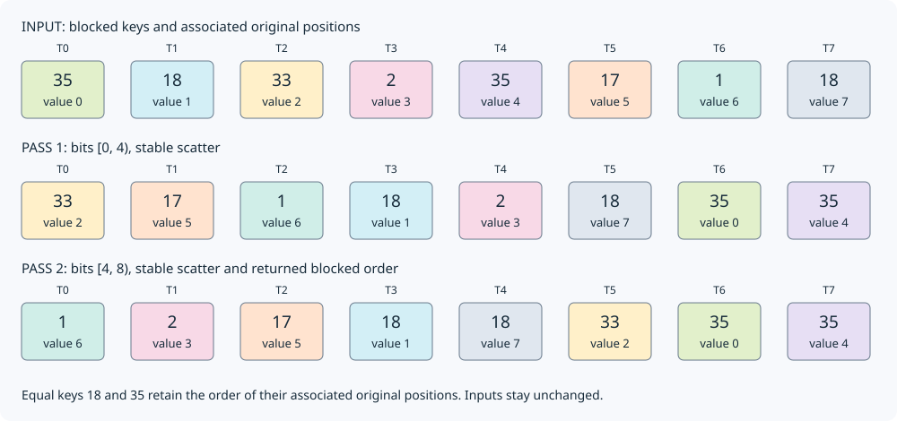
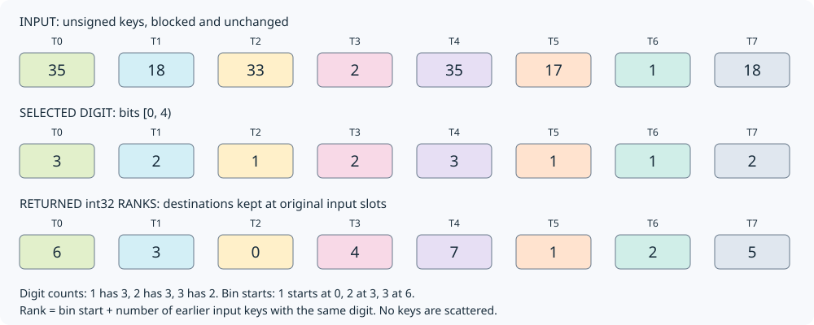

Radix Sort and Rank#
cuda.coop.cutlass.radix_sort_keys() and cuda.coop.cutlass.radix_sort_pairs()
order a block’s keys by selected bits. Sort processes digits from the
least significant selected bits upward, moving keys after each stable pass.
The pairs operation moves associated values with their keys.
cuda.coop.cutlass.radix_rank_keys() computes destinations for one digit. It
returns an int32 rank in each key’s original slot. The input keys stay
where they were; ranking does not perform a scatter. All three operations
preserve their input payloads.
The explorer uses eight teaching threads with unsigned uint32 keys.
Only their low eight bits are shown. The examples below the explorer use
complete, executable blocks of 64 threads.


Two stable digit passes sort eight unsigned keys. Values identify the original positions of the keys.#
For begin_bit=0, end_bit=8, the low digit orders bits zero through
three. The next pass orders bits four through seven, keeping the order
established by the low digit within each equal high digit.
Original keys 35 18 33 2 35 17 1 18
Original values 0 1 2 3 4 5 6 7
After bits [0, 4) 33 17 1 18 2 18 35 35
Associated values 2 5 6 1 3 7 0 4
After bits [4, 8) 1 2 17 18 18 33 35 35
Associated values 6 3 5 1 7 2 0 4


One digit’s ranks describe destinations without moving the keys.#
For radix_rank_keys(..., begin_bit=0, end_bit=4), digits one, two, and
three occur three, three, and two times. Their ascending bin starts
are zero, three, and six. Add the number of earlier keys with the
same digit to obtain each destination.
Input keys 35 18 33 2 35 17 1 18
Low-four-bit digit 3 2 1 2 3 1 1 2
Returned ranks 6 3 0 4 7 1 2 5
Input after ranking 35 18 33 2 35 17 1 18
Reading the stages#
Input order is blocked: all of thread zero’s
items, then all of thread one’s items, and so on. For K items per
thread, item i of thread t has input position t * K + i. This
order also determines which equal-digit key comes first.
For ascending Rank, each result is the number of keys with smaller digits plus the number of earlier input keys with the same digit. For descending Rank, count greater digits instead. The rank is a unique destination in the block tile, but it is returned at the key’s original blocked position. The counts and bin starts in the picture explain the calculation; the function returns per-key ranks and can fill an explicit bin-prefix payload.
Sort uses those destinations to move a working copy of the keys, and any
associated values, before examining the next digit. Equal digits retain
their order at each pass. That stability lets the more significant pass
retain the ordering already established by less significant bits.
descending=True reverses digit ordering while preserving the input
order of ties; it does not reverse a finished ascending array.
The provider uses the CUB BlockRadixSort specialization
with four bits per pass. A final pass may use fewer bits. This is an
implementation choice, not an argument to radix_sort_keys or
radix_sort_pairs. The picture shows ranks and ownership changes, not
the exact CUB instruction sequence or shared-memory layout.
Sort returns blocked output by default and also accepts
blocked_to_striped=True. With T block threads, sorted position p
then belongs to thread p % T, slot p // T. Intermediate digit passes
still use blocked ownership. Keys and values use the same output layout;
select a matching layout when storing them. Rank has no striped-output or
pairs option.
Bit intervals and key types#
[begin_bit, end_bit) is a half-open interval in CUB’s ordered key
representation. Unsigned keys use their bits directly, which is why the
explorer uses unsigned keys. Sorting a subset of bits orders that bit field;
the full numeric keys need not be increasing. Bits outside the field do not
break ties.
For signed integers, the sign bit is inverted before digit extraction.
Sort also accepts float32 and float64 keys:
CUB inverts all bits for negative floating-point keys and the sign bit for
nonnegative keys before selecting the interval. Returned keys retain their
original representations. Negative and positive zero compare equally and
preserve their input order; NaNs follow CUB’s transformed-bit ordering.
The unsigned explorer does not model these floating-point cases.
Calls accept ThreadData keys with int32, uint32,
int64, or uint64 dtype. Associated values may use the supported
numeric dtypes and must have the same extent as the keys. Scalars,
CuTe register tensors, and TensorSSA are also supported.
Floating-point keys are supported for Sort, while Rank requires integral keys.
Sort’s bit bounds may be block-uniform runtime integers and must satisfy
0 <= begin_bit < end_bit <= key_width. Omitting end_bit selects the
key width. Rank requires compile-time bounds selecting one through eight
bits. Its omitted end is begin_bit + radix_bits, with four bits when
radix_bits is also omitted. If both radix_bits and end_bit are
supplied, they must describe the same digit width. The explorer limits its
controls to the low eight bits of its small example keys.
All threads in the complete physical block must participate with matching
controls and payload extents. These operations do not accept warp groups
or a valid_items argument. Sort can use explicit temp_storage;
its size and alignment must cover the specialization. Explicit descriptors
default to auto_sync=False, so the caller must synchronize before reuse or
request auto_sync=True. Rank allocates and synchronizes its scratch
automatically.
Rank can additionally write exclusive_digit_prefix.
That side output describes digit bins and has its own per-thread extent,
separate from the returned per-key ranks. See
cuda.coop.cutlass.radix_rank_keys() for the supported output containers,
layout, and undefined tail slots. The explorer’s bin rows are mathematical
explanations, not an invocation of that optional output.
Sorting key/value pairs in a kernel#
This example checks key order, associated values, striped output, and Radix Rank bin prefixes against independent references.
@cute.kernel
def order_tile(
source: cute.Pointer,
full_keys: cute.Pointer,
digit_keys: cute.Pointer,
digit_positions: cute.Pointer,
ranks_out: cute.Pointer,
prefixes_out: cute.Pointer,
original_keys: cute.Pointer,
items_per_thread: cutlass.Constexpr,
):
block = coop.this_block()
positions = coop.ThreadData(items_per_thread)
keys = coop.load(block, source, items_per_thread=items_per_thread)
for item in cutlass.range_constexpr(items_per_thread):
positions[item] = (
cutlass.Int32(block.rank()) * items_per_thread + item
)
scratch = coop.TempStorage(alignment=32, auto_sync=True)
ordered = coop.radix_sort_keys(block, keys, temp_storage=scratch)
coop.store(block, full_keys, ordered)
pair_keys, pair_positions = coop.radix_sort_pairs(
block,
keys,
positions,
begin_bit=28,
end_bit=32,
descending=True,
temp_storage=scratch,
blocked_to_striped=True,
)
# Match the Store layout to the striped result registers.
coop.store(block, digit_keys, pair_keys, algorithm="striped")
coop.store(block, digit_positions, pair_positions, algorithm="striped")
prefixes = coop.ThreadData(items_per_thread=1)
ranks = coop.radix_rank_keys(
block,
keys,
begin_bit=28,
radix_bits=4,
descending=True,
exclusive_digit_prefix=prefixes,
)
# Only the first 16 bin slots are defined for this four-bit digit.
coop.store(block, prefixes_out, prefixes, valid_items=_BINS)
coop.store(block, ranks_out, ranks)
coop.store(block, original_keys, keys)
@cute.jit
def launch(
source: cute.Pointer,
full_keys: cute.Pointer,
digit_keys: cute.Pointer,
digit_positions: cute.Pointer,
ranks_out: cute.Pointer,
prefixes_out: cute.Pointer,
original_keys: cute.Pointer,
items_per_thread: cutlass.Constexpr,
):
order_tile(
source,
full_keys,
digit_keys,
digit_positions,
ranks_out,
prefixes_out,
original_keys,
items_per_thread,
).launch(grid=1, block=_BLOCK)
Ranking one unsigned digit#
The Rank part of the example selects a digit’s bit interval and returns ranks with the same per-thread extent. A bin-prefix payload records exclusive digit prefixes. See the Programming Guide and cuda.coop.cutlass API Reference for dtype, bit-range, and output constraints.